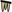

Schauhöhlen Top 10
Es gibt so viel Seiten im Internet, die Top 10, die Top 5, die tollsten der Welt und vieles andere mehr. Wir haben in dieser Abteilung einige Listen, die längsten Höhlen, die tiefsten, die ältesten Schauhöhlen, die ersten mit elektrischem Licht und so weiter. Alle diese Kriterien sind objektiv, Länge kann man messen und welche die längste ist hängt nicht von der Meinung eines einzelnen ab. In diesem Fall jedoch haben wir beschlossen eine Liste zu machen, die eine Meinung wiedergibt. Eine Liste der tollsten Schauhöhlen auf der Welt, das ist so ein bisschen wie die Liste der 100 Bücher, die man gelesen haben muss bevor man stirbt. Und sie ist zu einem großen Teil von der persönlichen Meinung desjenigen abhängig, der sie macht.
- Zum ersten muss es eine richtige Schauhöhle sein, keine Kletterei oder gar schwimmen.
- Es gibt Licht, einen Führer und offizielle Öffnungszeiten.
- Man muss keine Gruppe sein, um eine Führung zu buchen, diese Höhle kann jeder Tourist völlig problemlos besuchen.
- Es muss eine Höhle sein, keine Schlucht oder Klamm, und auch keine Cenote.
- Es muss in einem Land sein, das Touristen bereisen können, also kein afrikanischer Zwergstaat in dem eine Militärjunta herrscht, keine U.S.A. mit Trump Regierung und kein Land das sich im Krieg befindet.
- Und schließlich, sonst wäre es keine "Top"-Liste: die Höhle muss wirklich herausragend sein!
Die folgende Liste ist kein Ranking, die Reihenfolge ist willkürlich. Die einzige Klassifizierung ist die, dass wir Höhlen in Ländern für die eine Reisewarnung besteht, farblich markiert haben. Bei der aktuellen politischen Situation ist von einem Besuch leider dringend abzuraten.

|
 Skocjanske Jame Skocjanske JameSlowenien |
Die Höhle von St. Kanzian ist spektakulär, eine unterirdische Schlucht, eine riesige Doppeldoline mit senkrechten Wänden, eine Naturbrücke groß genug, dass darauf ein Dorf erbaut werden konnte. Die riesige unterirdische Schlucht wurde durch den Bau eines Weges erschlossen, und schon bald nach der Erkundung konnten die Besucher sie betreten. Es dauerte jedoch mehrere Jahrzehnte, bis die Höhle zu einer echten Schauhöhle ausgebaut wurde. Und die Entwicklung geht weiter, die Wege werden ständig verbessert und instand gehalten, die Brücke wurde vor einigen Jahren erneuert, und schließlich wurde die Höhle im November 1986 in die Liste des UNESCO-Welterbes aufgenommen. Man ist sehr stolz darauf, dass sie die einzige Höhle in Slowenien ist, die auf der WHL-Liste steht. |

|
Eisriesenwelt Österreich |
Die Eisriesenwelt ist die größte Eishöhle der Welt. Die Hallen sind mit allen Arten von Eisformationen, gigantischen Säulen und Türmen aus Eis, Eiswasserfällen und Gletschern geschmückt. Es gibt riesige Kammern, die völlig frei von Speläothemen sind, mit mehreren Metern Eis auf dem Boden, Gänge, die fast vollständig mit Eis gefüllt sind, und Gänge, die vollständig mit Eis gefüllt sind. Manchmal ist es notwendig, für den Weg einen Tunnel durch das Eis zu schneiden. An bestimmten Stellen schmilzt das Eis und gefriert wieder und bildet Eiszapfen. Und es ist wohl die Schauhöhle mit der tollsten Aussicht. Man braucht mehr oder weniger einen ganzen Tag, vom Parkplatz bei Werfen, mit dem Shuttlebus zum Kartenverkauf, 15 Minuten Wanderung zur Seilbahn, Seilbahnfahrt, vom Dr. Oedl Haus zur Höhle hoch. Und nach der 2 Stunden Führung das ganze wieder zurück. |

|
Grotta Gigante Italien |
Grotta Gigante ist eine wirklich riesige Höhlenhalle, 280 m lang, 65 m breit und 107 m hoch. Das war lange Zeit die größte Halle einer Schauhöhle auf der Welt. Wenn man jedoch La Verna in Frankreich als Schauhöhle interpretiert, ist sie die neue Nummer eins. Es gibt noch einige andere Gänge, die aber nicht Teil der Tour sind. Die Höhle ist Teil des Systems des unterirdischen Flusses Timavo, der bei Sankt Kanzian in den Karst eintritt. |

|
Peştera Urşilor Rumänien |
Peştera Urşilor bedeutet "Bärenhöhle".
Die Höhle wurde so genannt, da zahlreiche
 Höhlenbären (Ursus spelaeus)
in dieser Höhle gefunden wurden.
Die Höhle wurde bis vor etwa 15.000 Jahren regelmäßig von diesen großen Tieren besucht.
Zu dieser Zeit verschloss ein Felssturz den Eingang.
Es gibt eine Horrorstory, dass sich noch mehr als 140 Bären in der Höhle befanden.
Die Bären wurden hungrig und töteten sich gegenseitig, bis alle tot waren.
Diese Geschichte wird durch ihre Überreste erzählt, Bärenknochen mit den Spuren von Bärenzähnen, von 140 Individuen, die den Boden großer Teile der Höhle bedecken.
Die meisten Knochen wurden jedoch in den Zehntausenden von Jahren zuvor abgelagert. Höhlenbären (Ursus spelaeus)
in dieser Höhle gefunden wurden.
Die Höhle wurde bis vor etwa 15.000 Jahren regelmäßig von diesen großen Tieren besucht.
Zu dieser Zeit verschloss ein Felssturz den Eingang.
Es gibt eine Horrorstory, dass sich noch mehr als 140 Bären in der Höhle befanden.
Die Bären wurden hungrig und töteten sich gegenseitig, bis alle tot waren.
Diese Geschichte wird durch ihre Überreste erzählt, Bärenknochen mit den Spuren von Bärenzähnen, von 140 Individuen, die den Boden großer Teile der Höhle bedecken.
Die meisten Knochen wurden jedoch in den Zehntausenden von Jahren zuvor abgelagert.
|

|
Barbarossahöhle Deutschland |
Gipshöhlen sind selten und exotisch, umso interessanter mal eine davon zu besuchen. Das geht nur an wenigen Stellen auf der Welt, aber Deutschland hat gleiche mehrere. Die Höhle besitzt mehrere große Seen, die durch den außerordentlich hohen Gipsgehalt des Wassers eine besondere grüne Färbung aufweisen. Dies ist auf die besondere Filterung des einfallenden Lichts durch den gelösten Gips zurückzuführen. Das Wasser wirkt völlig klar und sauber und weist nach Messungen außergewöhnlich wenig Trübstoffe auf. Die Grünfärbung wird erst bei einer größeren Wassertiefe erkennbar. |

|
Natur Eis Palast Hintertuxer Gletscher Österreich |
Gletscherhöhlen sind natürliche Höhlen im Gletscher, sie sind selten, liegen meist in entlegenen Gegenden, und sind zudem gefährlich. Dies ist eine der spektakulärsten, und sie liegt mitten in Europa, ist bequem mit der Seilbahn erreichbar, und besitzt zudem sehr außergewöhnliche Eisformationen. Ich halte dies für eine absolute Ausnahmehöhle und ein einmaliges Erlebnis. Allerdings muss ich auch erwähnen, dass der hohe Eintrittspreis und die Kosten der Seilbahnfahrt dies zu einem recht teuren Spaß machen. Dennoch bin ich überzeugt, dass die Höhle jeden Cent wert ist! |

|
 Waitomo Caves Discovery Centre Waitomo Caves Discovery CentreNeuseeland |
Die Waitomo Region hat etwa ein halbes Dutzend Schauhöhlen, und jede davon ist außergewöhnlich.
Die berühmteste ist natürlich die mit den Glühwürmchen, offiziell bekannt als Arachnocampa luminosa, gibt es nur in Neuseeland und Australien.
Millionen dieser kleinen Insektenlarven leben in den Höhlen von Waitomo und strahlen ein unverwechselbares Licht von ihrem Körper ab.
Bilder davon sind aber leider urheberrechtlich geschützt, deshalb gibts hier nur den Höhleneingang nach einem Starkregen.
Wir haben beschlossen das Waitomo Caves Discovery Centre in die Liste aufzunehmen, denn es ist das Herzstück von Waitomo und gleichzeitig eine Art Besucherinformationszentrum. Es ist die ideale Einführung in das Gebiet der Waitomo-Höhlen. Viele der Aktivitäten in der Gegend beginnen und enden im Museum, und alle Verkehrsmittel halten hier. Das Besucherinformationszentrum bietet alles, was Sie über die Waitomo-Region wissen müssen, und nimmt Buchungen für Black Water Rafting, Lost World Adventures und viele andere Aktivitäten in der Region entgegen. Mit anderen Worten, diese Stadt mit der Summe der angebotenen Höhlentouren ist es wert in diese Liste aufgenommen zu werden. Das Glühwürmchen kommt übrigens in jeder Höhle der Region vor. |

|
 Jenolan Caves Jenolan CavesAustralien |
Die Jenolan-Höhlen liegen im Südwesten der Blue Mountains in der Region der Central Tablelands.
Sie befinden sich in einem 2.416 ha großen Schutzgebiet für Pflanzen und Tiere namens Jenolan Karst Conservation Reserve.
Es gibt viele Höhlen in New South Wales, aber diese sind die berühmtesten und meistbesuchten Schauhöhlen in Australien.
Nach Angaben von Cigna/Burri [2000] haben sie jährlich 240.000 Besucher.
Und das, obwohl man Stundenlang durch den Bush fahren muss, um hinzukommen.
Es scheint typisch für Australien zu sein, dass Höhlensysteme so ausgebaut werden, dass sie mehrere Schauhöhlen haben. Jenolan ist die Mutter all dieser Schauhöhlenagglomerationen, denn in der fast 200-jährigen Geschichte wurden zahlreiche Gänge als Schauhöhlen erschlossen. Da dies aber ein fortlaufender Prozess ist, ändert sich die Anzahl der Schauhöhlen von Zeit zu Zeit. Als wir diese Seite in den 1990er Jahren zum ersten Mal erstellten, gab es eine Anzahl von neun Höhlen, die für die Öffentlichkeit zugänglich waren. Im Moment sind sechs geführt, vier self-guided zugänglich, und drei geschlossen. |

|
Postojnske Jame Slowenien |
Zuerst war ich mir nicht sicher, soll ich die Postojnska Jama in diese Liste aufnehmen? Das ist eine Touristenfalle und mit 1 Million Besuchern im Jahr wohl die meistbesuchte Schauhöhle der Welt. Das ist wohl eher ein Abtörner. Aber tatsächlich ist die Höhle großartig, und das nicht in erster Linie, weil sie tolle Tropfsteine hat. Sie hat einen Zug mit dem man 3 Kilometer durch die Höhle fährt, und nach der Runde wieder zurück, sie hat einen unterirdischen Ballsaal mit Kristallleuchtern, sie hat ein historisches Eingangsgebäude. Außerdem gibt ein Museum mit Höhlentieren, das ist wohl weltweit einmalig, ein Museum über die Schauhöhlengeschichte, ein archäologische Museum, einen Höhlengang mit historischen Wandbeschriftungen von Besuchern, und vieles mehr. Und das alles auf dem Weg vom Parkplatz zum Höhleneingang. |

|
Grottes de Lorette-Rochefort Belgien |
Die Grottes de Lorette in Rochefort in Belgien hat bei den meisten Leuten als einzige Besonderheit, dass sie in der Nähe der meistbesuchten Höhle Belgiens, der Höhle von Han, liegt. Man weiß nicht, liegt es am Tourismusmagnet, dass hier so wenige Besucher sind, oder wäre hier noch weniger los, wenn die Grotte von Han nicht in der Nähe wäre? Tatsächlich halten wir diese Höhle für die interessanteste Höhle in Belgien, während Han mehr oder weniger ein Disney-Land-Verschnitt ist und total überteuert. Erst mal hat sie ein sehr interessantes Höhlenmuseum, das einem die Zeit vertreibt, bis es losgeht. Und dann gehts los, und zwar mit Treppensteigen, und das hört bis zum Ende der Führung auch nicht mehr auf, es geht immer runter oder rauf. Die ganze Höhle besteht aus einer sehr steil geneigten Serie von Gängen und sogar die riesigen Hallen sind dauernd geneigt, das liegt daran, dass sie alle sich entlang einer schräg liegenden Störungszone entwickelt haben. Und weil die Hallen so groß sind, dass man sich das kaum vorstellen kann, gibts hier was ganz Besonderes: der Führer lässt während der Führung einen Heißluftballon namens aufsteigen. Das verdeutlicht dem Besucher seit über einem Jahrhundert eindrucksvoll die Dimensionen. |

|
Grotte de Choranche Vercors, Frankreich |
Die Grotte de Choranche ist seit 1965 für die Öffentlichkeit zugänglich. Damals musste man allerdings noch 45 Minuten zu Fuß gehen oder auf einem Maultier vom Dorf Choranche aus reiten, um zum Höhleneingang zu gelangen. Zu dieser Zeit gab es noch kein elektrisches Licht in der Höhle, die Führungen wurden mit Karbidlampen durchgeführt. Aber schon zwei Jahre später erhellte das erste elektrische Licht, das von einem Generator versorgt wurde, einige Teile der Höhle. Eine neue Straße ermöglichte einen einfachen Zugang zum Höhleneingang. Ein Highlight der Höhle ist die enorme Menge an Makkaroni, dünne, hohle Stalaktiten, die normalerweis nur einige Zentimeter lang werden. Hier haben sie Längen von mehreren Metern. Eine andere Besonderheit sind die Grottenolme (Proteus anguinus), die ursprünglich aus Slowenien stammen. Sie wurden in der Höhle vom C.N.R.S. (Laboratorium von Moulis) zur Zucht freigelassen und haben sich wohl inzwischen recht gut eingelebt. |
|
|
Gouffre de Padirac Lot, Frankreich |
Der Eingang zum Gouffre de Padirac ist ein spektakulärer Schacht mit einer Tiefe von 75 m und einem Durchmesser von 33 m.
Dieser Schacht öffnet sich auf natürliche Weise zur Oberfläche der Causses de Gramat und ist daher schon sehr lange bekannt, wahrscheinlich seit dem 13. Jahrhundert.
Er gab der Höhle ihren Namen, denn gouffre bedeutet auf Französisch tiefes Loch oder bodenlose Grube.
Der Tageslichtschacht war bereits im 19. Jahrhundert ein berühmtes Touristenziel, als E. A. Martel (*1859-✝1938) 1889 zum ersten Mal in diese Höhle kam.
Er unternahm eine erste Expedition und entdeckte die Höhle am Grund des Schachts und den Höhlenfluss.
Ein Jahr später entdeckte er bei einer zweiten Expedition den heutigen Salle du grand Dôme.
Die Erforschung der Höhle hat auch nach Martel nicht aufgehört, und so sind heute mehr als 20 Kilometer Höhlenfluss entdeckt und vermessen worden.
Der Besuch dieser Höhle ist aufgrund ihres Schachts sehr beeindruckend, in dem sich ein Turm aus Stahl befindet. 455 Stufen oder zwei Aufzüge führen die Besucher hinunter in die Höhle und zurück an die Oberfläche. Vom Grund des Abgrunds in 75 m Tiefe geht es jedoch über Steintreppen noch weiter hinunter zum Höhlenfluss in über 100 m Tiefe. Die Fahrt wird nun in Booten fortgesetzt und erreicht schließlich den Salle du grand Dôme, der 94 m hoch ist. Die Salle des Grands Gours enthält, wie der Name schon sagt, riesige Sinterbecken, die auf Französisch Gours genannt werden. Die beeindruckendsten Speläotheme sind ein 40 m hoher Stalagmit und ein 25 m langer und 4 m dicker Stalaktit. |

|
Abîme de Bramabiau Cévennes, Frankreich |
Der Fluss Bonheur (Glück) entspringt in der Nähe des Observatoriums Mont Aïgoual an der Grenze zu den Cevennen. Dieses Gebiet ist nicht verkarstet, da es nicht aus Kalkstein besteht, und der Fluss fließt an der Oberfläche. Nach 6 km erreicht er das kleine Karstgebiet Causse de Camprieu und verschwindet sofort im Untergrund. Der Fluss fließt in eine riesige Höhle und bildet eine unterirdische Schlucht. Nach 500 m Luftlinie taucht er wieder auf, und nun hat sich der Name des Flusses geändert, er heißt jetzt Bramabiau. Die beiden Eingänge der Höhle sind riesig und leicht zu sehen und den Einheimischen seit langem bekannt. Doch trotz einiger prähistorischer Überreste in einem Seitenarm wurde die Höhle offenbar nie wirklich erforscht, da das wilde und gefährliche Wasser dies verbot. Zumindest bis zum Ende des 19. Jahrhunderts, als E. A. Martel mit seinen Höhlenforschungen begann. Er befand sich auf einer Urlaubsreise in dieser Gegend und war neugierig auf diese spektakuläre Höhle, sodass er einen Freund überredete, diese unterirdische Schlucht mit ihm zu erkunden. Er hatte bereits mehrere Höhlen besucht, aber dies war die erste speläologische Tour. Dieser Tag, der 27. Juni 1888, gilt als der Geburtstag der modernen Höhlenforschung. |

|
Aven d’Orgnac Ardeche, Frankreich |
Aven d´Orgnac ist durch große Kammern gekennzeichnet, die zwischen 30 und 50 m hoch sind. Diese riesigen Kammern sind der Grund für die charakteristischen Tellerstapelstalagmiten. Die von dem berühmten Höhlenforscher Robert de Joly entdeckte und erschlossene Höhle ist nur eine von mehreren Schauhöhlen entlang der Ardeche. Eine der einzigartigen Besonderheiten ist ein Aufzug, der die Besucher vom tiefsten Punkt des Rundgangs wieder an die Oberfläche bringt. Dies macht die Touren nicht nur weniger anstrengend, sondern ermöglicht auch Menschen, die sonst nicht fit genug wären, den Besuch der Höhle mit ihren insgesamt 120 m Höhenunterschied. |

|
Aven Armand Grands Causses, Frankreich |
Aven Armand liegt auf einem Karstplateau namens Causse Méjean oder Les Causses auf einer Höhe von 1.000 m über dem Meeresspiegel. Sie wurde 1897 von Louis Armand als unspektakuläres Loch im Boden entdeckt. Er war Schmied aus der nahe gelegenen Stadt Le Rozier und hatte einige Jahre zuvor den Rechtsanwalt Edouard Alfred Martel kennengelernt, der seine Sommerferien in dieser Gegend verbrachte. Mit anderen Worten: neben der Tatsache, dass es sich um eine grandiose Halle mit überwältigenden Tellerstapelstalagmiten handelt, die mit einem Schrägaufzug zugänglich gemacht wurde, ist es auch noch ein Teil der Geschichte der Höhlenforschung. |
|
|
Aggtelek Karst Ungarn Jaskyna DomicaSlowakei |
Der Karst von Aggtelek hat vier Schauhöhlen, von denen jede auf ihre Art besonders ist. Zudem gibt es die Möglichkeit die Baradlahöhle von einer Schauhöhle zur anderen zu durchwandern, dieser großräumige Höhlengang wurde sogar mit einem Weg ausgebaut, hat aber kein elektrisches Licht. Und eine weitere Besonderheit, das Karstgebiet ist grenzüberschreitend, und eine der vier Schauhöhlen befindet sich in der Slowakei. Zu Zeiten des Kalten Kriegs gab es da sogar einen unterirdischen Grenzzaun, um zu verhindern, dass DDR-Bürger über die Slowakei und Ungarn in den Westen flüchten. |
| La Geoda de Pulpí Spanien |
Eine Geode oder Druse ist ein Begriff der Mineraliensammler und bezeichnet eine Blase im Gestein, die mit Mineralien gefüllt ist. Aufgrund des Lochs im Gestein transportiert Wasser, das durch die Poren des Gesteins sickert, Mineralien in das Loch, und in dem mineralreichen Wasser beginnen Kristalle zu wachsen. Im Allgemeinen werden Geoden mit einem Durchmesser von einigen Zentimetern in Mineraliengeschäften verkauft, Stücke mit einem halben Meter sind sehr teuer. Aber manchmal wird eine Geode mit einer Größe von mehreren Metern entdeckt, und eigentlich ist jedes natürliche Loch im Fels, das groß genug ist, um von einem Menschen betreten zu werden, eine Höhle, so lautet die Definition des Begriffs. Wir haben acht Geoden aufgelistet, die tatsächlich für die Öffentlichkeit zugänglich sind, und jede von ihnen ist sicherlich eine außergewöhnliche und besondere Sehenswürdigkeit. | |

|
Grotta del Vento Italien |
Grotta del Vento (Windhöhle) ist ein Höhlensystem mit mehreren Eingängen auf verschiedenen Höhen. Deshalb bildet sich eine Konvektionsströmung deren Richtung jahreszeitlich bedingt ist. Der Name Winhöhle ist zwar verbreitet, aber eigentlich falsch, man sollte eigentlich Blasloch sagen. Der erschlossene Teil der Höhle zeigt drei völlig unterschiedliche Höhlenabschnitte. Im ersten gibt es zahlreiche schöne Speläotheme, Stalaktiten, Schals und Höhlenperlen. Der zweite liegt tiefer, auf dem Grund einer 45 m tiefen Grube und ist manchmal mit Wasser gefüllt. Hier gibt es keine Tropfsteine aus Kalk oder Kalzit, sondern eher seltene Lehmtropfsteine. Der dritte Teil befindet sich oberhalb des Eingangssiphons. Der schmale Pfad windet sich einen steilen und zerklüfteten Schacht hinauf und zeigt einen erstaunlichen vertikalen Abschnitt der Höhle. |
|
|
Grotta Grande del Vento - Grotte di Frasassi |
Die Grotta Grande del Vento, die Große Höhle des Windes, ist die schönste Schauhöhle Europas. Manchmal wird die Schönheit mit ihrer späten Entdeckung im Jahr 1971 erklärt. Es gibt keine lange Geschichte mit Jahrhunderten von Besuchern, die brennende Fackeln und rußende Kerzen benutzten. Aber das ist nur ein Teil der Geschichte. Die Höhle ist extrem groß, der Kalkstein sehr rein, der Sinter wächst schnell und bildet außergewöhnliche Speläotheme jeglicher Art. Die besondere Geologie mit schwefelhaltigen Quellen in der unteren Ebene gibt der Höhle einen zusätzlichen Schub, mit Lösung durch Schwefelsäure und der Bildung von Mineralien auf Gipsbasis. Die Stalagmiten im Abisso Ancona sind typische Tellerstapelstalagmiten. Das von der hohen Decke herabfallende Wasser hat eine hohe Geschwindigkeit, was zu dieser unterschiedlichen Form der Stalagmiten führt, die wie Palmenstämme aussehen. |
|
|
Aven d’Orgnac |
Diese Höhle zeichnet sich durch große Kammern aus, die zwischen 30 und 50 m hoch sind. Diese riesigen Kammern sind der Grund, warum sie die charakteristischen Tellerstapelstalagmiten enthält. Dieses Höhlensystem hat einen natürlichen Eingang, ein Tageslichtschacht in der Nähe des Dorfes Orgnac, genannt le trou du Bertras (das Loch von Bertras). So ist es leicht zu verstehen, warum die Höhle später Aven d’Orgnac (Abgrund von Orgnac) genannt wurde. Die Führung steigt durch drei Hallen insgesamt 120 m hinunter, am Ende der Führung fahren die Besucher dann mit dem Aufzug wieder zur Oberfläche zurück. |
| New Athos Cave Georgia | Novy Afon Cave Georgien |
Die ახალი ათონის მღვიმე (Neue Athos-Höhle) ist die wichtigste touristische Höhle Georgiens. Der eigentliche Name der Höhle ist Афон Ҿыцтәи аҳаҧы, die abchasische Version dieses Namens. Wegen des tiefen Eingangsschachts war es notwendig, einen künstlichen Eingangstunnel zu schaffen. Da dieser Tunnel 1,3 km lang ist, wurde ein Zug installiert, der die Besucher durch den Tunnel in die Höhle und zurück bringt. Die eingleisige und elektrifizierte Schmalspurbahn (914 mm) hat eine dritte Schiene, ähnlich wie bei elektrischen Modelleisenbahnen. Die dritte Schiene dient der Stromversorgung der Züge mit 380 V Gleichstrom, nur an Weichen und in Personenbahnhöfen gibt es keine dritte Schiene und der Zug fährt mit 240 V Batterien. |

|
Mammoth Cave National Park U.S.A. |
Mammoth Cave ist die längste Höhle der Welt mit mehr als 570 Kilometern an Gängen. Diese Länge ist so außergewöhnlich, dass die zweitgrößte Höhle der Welt, die Jewel Cave in South Dakota, USA, mit 218 km nicht mal halb so lang ist. Und obwohl es sehr unwahrscheinlich ist, dass die Länge der Mammoth Cave in nächster Zeit von irgendeiner anderen Höhle erreicht wird, ändert sich der zweite Platz aufgrund neuer Entdeckungen immer wieder. Und nicht nur die Länge ist ein Superlativ, auch das Beleuchtungssystem wurde 2006 für 6 Millionen USD renoviert. Das Ergebnis war ein elektrisches System mit 1.200 Beleuchtungskörpern, 73 km Kabeln und 47 Telefonen für 9,6 km Wege. Es handelt sich um einen Park in dem mehrere Höhleneingänge (mit unterschiedlichen Namen) jeweils unabhängig als Schauhöhle ausgebaut wurden. So bietet der Park in guten Jahren deutlich über 20 verschieden Touren an. |

|
Kungur ledenica pestera Perm, Russland |
Bei den heutigen politischen Problemen ist Russland nicht unbedingt ein tolles Reiseland. Und auch die Betreiber haben bereits vor Jahren festgestellt, dass sich kaum internationale Touristsen zu ihnen verirren. Die Website ist inzwischen nur noch auf Russisch und die domain wurde von com auf ru geändert. Aber diese Höhle wär echt ein Grund einige Strapazen auf sich zu nehmen. Wie der Name schon sagt, ist diese Höhle für ihre Eisformationen bekannt, und das in einer großräumigen Gipshöhle. Die wohl seltsamsten Eisformationen sind Schneeflocken von der Größe eines Ahornblatts. Sie verändern sich im Laufe des Jahres in ihrer Größe und sind im Spätwinter am spektakulärsten, sodass der März die beste Zeit für einen Besuch der Höhle ist. Diese Höhle hat einen seltsamen Superlativ, da sie mit nur 120 m ü. M. die tiefstgelegene bekannte Eishöhle ist. Eishöhlen benötigen eine Temperatur um 0 °C, was zu einer kontinuierlichen Bildung und Schmelzung von Eis führt. Bei niedrigeren Temperaturen würde die Höhle bald vollständig mit Eis gefüllt sein, bei höheren Temperaturen gäbe es kein Eis. |

|
Carlsbad Caverns New Mexico U.S.A. |
Carlsbad Caverns ist wahrscheinlich die berühmteste Höhle der Vereinigten Staaten. Es gibt längere Höhlen, es gibt tiefere Höhlen, es gibt noch schönere Höhlen. Aber nur sehr wenige! Und keine Höhle hat so viele Top-Ten-Platzierungen wie Carlsbad. Die Höhle hat ein spektakuläres Eingangsportal, enorme Hallen, riesige Tropfsteine, seltene Höhlenmineralien und Tausende von Fledermäusen. |
| Kartchner Caverns |
Die Kartchner Caverns ist eine recht junge Schauhöhle, und während es wohl durchaus vergleichbare Schauhöhlen gibt, ist keine so gut erhalten. Sie wurde erst 1999 eröffnet, und beim Ausbau wurde sehr viel Gewicht auf den Schutz der Höhle gelegt, insgesamt wurden 20 Million USD in den Ausbau gesteckt. Daraus ergibt sich, dass diese Höhle wohl die am besten erhaltene Schauhöhle der Welt ist, die Beschädigungen durch den Ausbau wurden rigoros minimiert, es gibt sogar eine Luftschleuse, um einen Austausch mit der Aussenluft zu verhindern. Die spektakulären Tropfsteine sind diesen Aufwand sicherlich wert. Und der gute Erhaltungszustand macht die außergewöhnliche Höhle zu einer der schönsten Schauhöhlen der Welt. |
 Auf Duck Duck Go nach "Schauhöhlen Top 10" suchen
Auf Duck Duck Go nach "Schauhöhlen Top 10" suchen Das sind die zehn schönsten Höhlen der Welt (besucht: 08-JUN-2025)
Das sind die zehn schönsten Höhlen der Welt (besucht: 08-JUN-2025)
 Index
Index Themen
Themen Hierarchisch
Hierarchisch Länder
Länder Karten
Karten{kind=link}
{kind=link}
{kind=link}